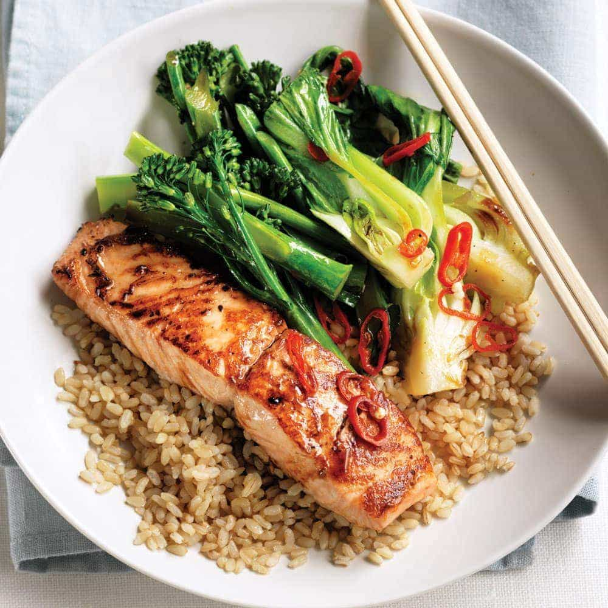

The Best Salmon and Rice Ever

Today I will teach you how to make my favorite quick and easy salmon stir fry!
You may adjust this to your liking as it is a very versatile recipe.
Ingredients
- 3 fresh caught salmon filets
- 1 cup brown rice
- 1/2 cup fresh broccoli
- 1 tablespoon grass fed butter
Steps
- Begin cooking your cup of brown rice using whatever method you prefer.
- Prepare salmon filets while pan is heating on a medium heat. Make sure all skin is removed before cooking.
- Once the butter is melted add your filets to the pan, sprinkle salt and pepper onto each side and cook until each side is crispy and flakey.
- When the salmon is fully cooked, remove it from the pan and immediately add the broccoli for a quick stir fry in the juices.
- Remove the rice from the heat and add some to a bowl. Then add your salmon and broccoli and serve with whatver sauce or seasoning you like.